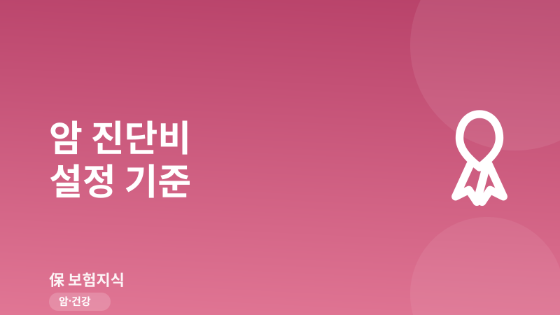
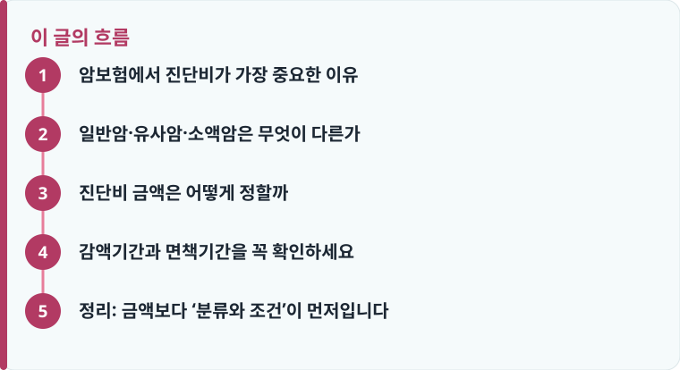

암 진단비는 치료 외 생활비·간병비까지 대비하는 목돈이므로, 일반암 기준 보장금액을 먼저 정하는 것이 출발점입니다.
유사암(소액암)은 진단비가 일반암의 10~20%만 지급되는 경우가 많으므로 약관 분류를 꼭 확인해야 합니다.
가입 초기에는 감액기간이 적용되어 진단비가 절반만 지급될 수 있어, 가입 시점과 보장 시점을 함께 봐야 합니다.
암보험에서 진단비가 가장 중요한 이유
암 진단을 받으면 수술비나 입원비만 드는 것이 아닙니다. 치료 기간 동안 일을 쉬어야 하는 소득 공백, 간병비, 교통비, 비급여 치료비까지 한꺼번에 발생합니다. 이때 한 번에 목돈으로 지급되는 ‘암 진단비’는 실손보험이 채워 주지 못하는 생활 영역을 메우는 역할을 합니다. 그래서 암보험을 고를 때는 특약 개수보다 진단비 담보를 먼저 봐야 합니다. 실손과의 역할 차이가 헷갈린다면 건강보험(질병보험) 구조를 함께 읽으면 정리가 쉽습니다.
진단비는 ‘진단 확정’ 시점에 지급되기 때문에, 치료를 시작하기 전 자금 부담을 줄여 준다는 점에서 특히 유용합니다. 입원·수술 담보는 실제 치료 행위가 있어야 청구할 수 있지만, 진단비는 진단만으로 목돈이 나오기 때문에 초기 대응 자금으로 활용도가 높습니다. 다만 진단비가 모든 암에 동일하게 나오는 것은 아니라는 점이 핵심입니다.
일반암·유사암·소액암은 무엇이 다른가
약관은 암을 위험도와 발생 빈도에 따라 구분합니다. 흔히 ‘일반암’은 위암·폐암·간암 등 주요 암을 말하며 진단비가 100% 지급됩니다. 반면 ‘유사암’ 또는 ‘소액암’으로 분류되는 갑상선암, 기타피부암, 경계성종양, 제자리암(상피내암)은 진단비가 일반암의 10~20% 수준으로만 지급되는 경우가 많습니다.
문제는 발생 빈도가 높은 갑상선암이 대부분 유사암으로 분류된다는 점입니다. 같은 ‘암 진단’이라도 분류에 따라 받는 금액이 크게 달라지므로, 가입 전 약관의 암 분류표와 지급 비율을 반드시 확인해야 합니다. 보험사·상품별 분류와 한도를 비교하려면 암보험 비교 기준을 참고하면 좋습니다.

진단비 금액은 어떻게 정할까
적정 진단비는 ‘치료비’가 아니라 ‘치료 기간의 생활 유지비’를 기준으로 잡는 것이 현실적입니다. 일반적으로 일반암 진단비는 3,000만 원에서 5,000만 원 사이로 설정하는 경우가 많은데, 이는 6개월~1년의 소득 공백과 간병·비급여 비용을 함께 고려한 수준입니다. 외벌이 가정이거나 자영업자처럼 소득 중단 위험이 큰 경우에는 진단비를 더 높게 잡는 것이 안전합니다.
다만 진단비를 무작정 높이면 보험료 부담이 커지므로, 본인 소득과 고정지출을 함께 따져야 합니다. 필요 보장금액을 가늠하기 어렵다면 보장금액 계산 기준을 활용해 ‘소득 공백 × 회복 기간’으로 역산해 보는 방법이 도움이 됩니다. 암보험 자체가 처음이라면 암보험 기본 구조부터 확인하는 것을 권합니다.
또 하나 고려할 점은 진단비를 ‘일반암 1개 담보’로만 채울지, 아니면 ‘소액암·유사암’ 담보를 따로 넣을지입니다. 갑상선암처럼 발생 빈도가 높은 암이 유사암으로 분류된다면, 일반암 진단비만으로는 실제 도움이 되는 금액을 받기 어려울 수 있습니다. 이 경우 유사암 진단비 특약을 일정 수준 함께 설계하면 보장 공백을 줄일 수 있지만, 그만큼 보험료가 올라가므로 우선순위를 정해 선택하는 것이 좋습니다.
작성·검수 기준
이 글은 특정 보험사 상품을 권유하기 위한 것이 아니라, 암보험 진단비를 설계할 때 알아야 할 일반적인 기준을 설명하기 위해 작성했습니다. 암의 분류(일반암·유사암·소액암), 진단비 지급 비율, 감액기간은 가입 시점의 약관과 개별 상품에 따라 달라질 수 있습니다.
정확한 보장 범위는 본인 증권의 약관과 상품설명서, 그리고 보장·면책·감액기간 안내를 함께 확인하는 것이 가장 정확합니다.
감액기간과 면책기간을 꼭 확인하세요
암보험은 대부분 가입 후 90일의 면책기간이 있어, 이 기간에 진단받은 암은 보장되지 않습니다. 또한 가입 후 1~2년 이내에 진단되면 진단비의 50%만 지급되는 ‘감액기간’이 적용되는 상품이 많습니다. 즉 가입 직후에 진단받으면 기대한 금액의 절반만 받을 수 있다는 뜻입니다.
- 약관에서 면책기간(보통 90일)을 먼저 확인합니다.
- 감액기간과 감액 비율(예: 1년간 50%)을 확인합니다.
- 유사암·소액암의 지급 비율과 분류를 확인합니다.
- 일반암 진단비를 소득 공백 기준으로 정합니다.
- 보험료 부담과 갱신 여부를 함께 비교해 최종 결정합니다.
정리: 금액보다 ‘분류와 조건’이 먼저입니다
암보험 진단비는 단순히 ‘얼마짜리냐’보다 어떤 암에 얼마가, 언제부터 지급되는지가 더 중요합니다. 일반암 기준 진단비를 소득 공백에 맞춰 정하고, 유사암 지급 비율과 감액·면책기간을 확인하면 가입 후 ‘생각보다 적게 나왔다’는 실망을 줄일 수 있습니다.
다른 보험 정보 글이 궁금하다면 보험지식 블로그에서 이어 읽어 보세요. 가입 전에는 반드시 약관과 상품설명서를 확인하는 것이 가장 안전한 방법입니다.